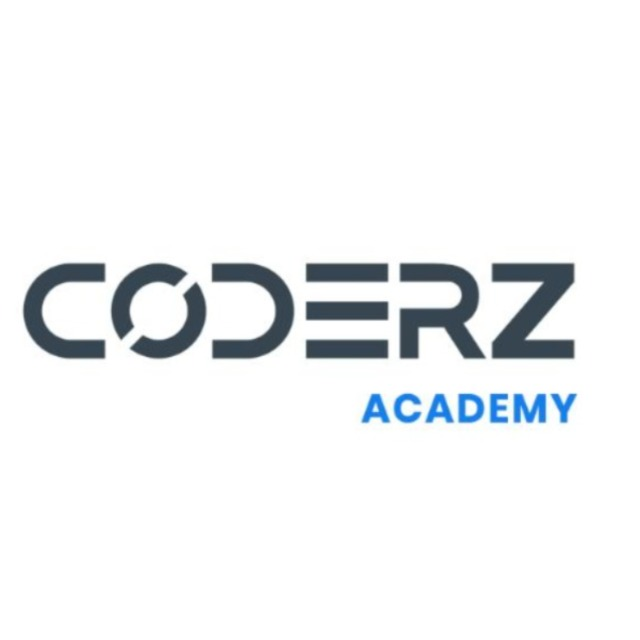

HTML Basics
تعلّم بناء صفحات الويب باستخدام عناصر HTML.
- المستوى
- مبتدئ
- المدة
- 4 أسابيع
اختر الكورس المناسب لمستواك واطّلع على المتطلبات قبل التسجيل.
تعلّم بناء صفحات الويب باستخدام عناصر HTML.
تعلّم تنسيق صفحات الويب وتغيير الألوان والخطوط وتخطيط الصفحة.
تحتاج إلى جهاز كمبيوتر ومتصفح إنترنت، ولا يلزم امتلاك خبرة سابقة للبدء بكورس HTML Basics.

لا تحتاج إلى خبرة سابقة للبدء بدورة HTML Basics.
أحضر جهاز كمبيوتر ودفتر ملاحظات، وتأكد من وجود متصفح ويب.
الفيديو المرفق مثال توضيحي ويمكن استبداله بفيديو المعهد الأصلي.